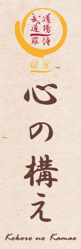

|  |
JODO - A BOT ÚTJAA JODO hagyományos japán harcmûvészet, amelyet a XVII. század közepén alkottak meg. A JODO a bot mûvészete a szamuráj kardjával párosítva. Történelmi háttérA XVII. században történt, hogy Muso Gonosuke, a kard mestere találkozott Miyamoto Musashival, a kor egyik legjobb kardforgatójával. Miyamoto két kardos technikája végül kifogott Musón, aki így vesztesen került ki a harcból, ám életben maradt. Muso visszavonult, és meditálás útján próbált olyan fegyvert találni, amellyel felülkerekedhet Musashin. Így született meg a JO JUTSU, a bot mûvészete. A hengeres formája, a természetes anyaga, és az a lehetõség, hogy mindkét vége használható, párosulva ártalmatlan kinézetével nagyon hatékony fegyverré tették a jo-t. Végül Muso a JO-jával gyõztesen került ki Muszashival vívott második küzdelmébõl. A JO JUTSU-t Shimizu Takaji Nagymester alakította JODO-vá, a bot útjává, nem sokkal a Csendes-óceáni háború után. A JODO-t elõször a rendõri erõk kezdtek alkalmazni. A JODO nemzetközivé válása nagyon friss, és a versenyek hiánya miatt a mai napig kevéssé ismert tan. Az SHINTO MUSO RYU JODO iskola európai központja Svájcban van. A JODO alapelveiA JODO-t ketten gyakorolják. Az egyik oldalon a fából készült kard, a másik oldalon a bot. A távolságok pontos felmérése, az idõzítés alapos ismerete valamint a test és a szellem tökéletes koordinációjának köszönhetõen a két fél bár szemben áll egymással, mozdulataik mégis figyelemreméltó harmóniában vannak. A versenyek hiánya és a tanultak lelkiismeretes betartása lehetõvé teszik a hagyományos technikák megõrzését. A JODO technikáiA JODO összes technikája a kard és a bot közötti hosszúságkülönbségen alapszik. Az hogy a kard mintegy húsz centivel rövidebb, lehetõvé teszi a jo oldal számára az ellenfélre mért ütéseket (természetesen ellenõrzéssel), szúrásokat vagy a létfontosságú pontok blokkolását. A gyakorlás nélkülözi a versengést, mindenki számára elérhetõ, és nem igényel semmiféle különleges fizikai erõnlétet, kivéve az önfejlesztés vágyát. A Jodo sok mindent megtanít: etikettet, erõteljes légzést, szellemi koordinációt, tér-idõt, szerénységet.
Fejezetek Pascal Krieger, Shinto Muso Ryu Menkyo Kaiden, JODO: a bot útja címû könyvébõl: Felszerelés: Fehér vagy kék keiko gi, hakama (hagyományos hajtogatott japán nadrág), jo (bot) és bokken (fakard). * A szöveg a Jaff Raji honlapján található francia eredeti alapján készült. A magyar szöveget készítették: Vincze Gábor és Gollob Szabolcs. Az európai JODO szövetség honlapja: * KÖNYV:
* Videóink:
Fotóalbumok:
|


| Tenjinchi Dojo | EBR International | Raji Ukemi Fitness | Aikido | Jodo | Iaido | Gyerekcsoport | Órarend | Tanárok Hírek/Események | Fotók / Videók | Olvasnivaló | Linkek |